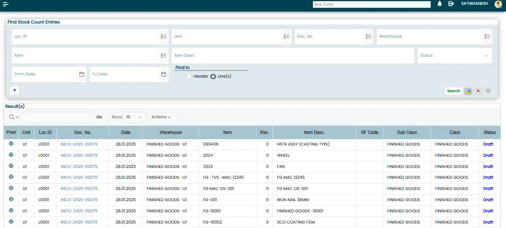
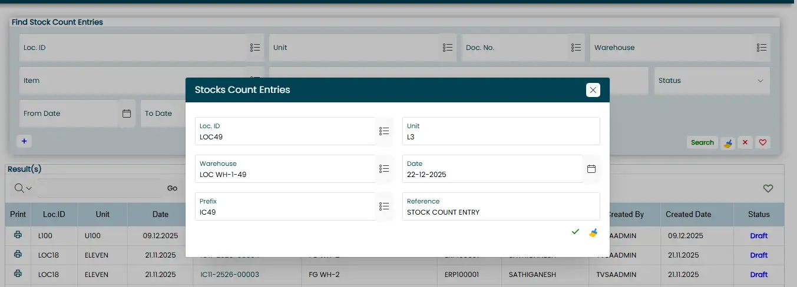
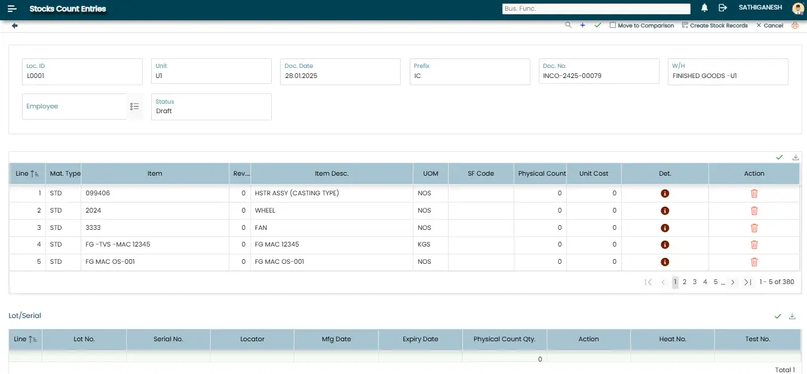
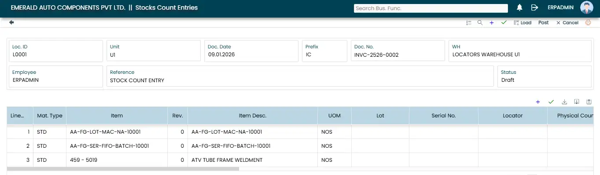

<div data-category="Inventory Control" data-title="Stock Count Entries" data-updated="January 27, 2026" data-contributors="RoadmapIT" data-breadcrumb="Home,Inventory Control,Stock Count Entries">
  <div class="page-content">
    <p>Stock count entries</p>
    <h5>Navigation path:</h5>
    <p class="fs-6">Supply Chain Management \ Inventory \ Transaction \Stock Count Entries</p>
    
    <ul style="list-style-type: none; align-content: center">
      <li class="mouse-icon">Search screen displays the list of Stock Count Entries with the relevant details and its status</li>
      <li class="mouse-icon">User can filter the respective documents by entering the search parameters at the header.</li>
      <li class="mouse-icon">On clicking search button, system displays the results relevant to the search parameters entered.</li>
      <li class="mouse-icon">
        Using
        
        icon, entered search parameters can be cleared.
      </li>
      <li class="mouse-icon">
        To close the screen, use
        <i class="bi bi-x fs-4 mx-2 text-danger"></i>
        icon
      </li>
      <li class="mouse-icon">
        Click
        <i class="bi bi-plus fs-4 mx-2 text-primary"></i>
        Add button we can create new stock count entry by entering all the mandatory fields displayed in the Add dialog
      </li>
    </ul>
    
    <ul style="list-style-type: none; align-content: center">
      <li class="mouse-icon">Default Loc ID& Unit will be auto populated.</li>
      <li class="mouse-icon">Enter/Select the Warehouse; Warehouse Description is displayed automatically.</li>
      <li class="mouse-icon">Current (Count) date is automatically displayed and the date can be changed if needed</li>
      <li class="mouse-icon">Select the Prefix</li>
      <li class="mouse-icon">
        Click on
        <i class="bi bi-check-lg fs-4 mx-1 text-success"></i>
        button to create the stock count entry document
      </li>
    </ul>
    
    <ul style="list-style-type: none; align-content: center">
      <li class="mouse-icon">Enter physical count (Lot number/ serial details, physical count quantity)</li>
      <li class="mouse-icon">Click “Create Stock Records” to update the Item count.</li>
      <li class="mouse-icon">Once the document is saved, Stock count Doc. no. is automatically generated</li>
      <li class="mouse-icon">If the item type is Lot/Serial, the Lot serial details are displayed in the Lot/Serial dialog. below</li>
      <li class="mouse-icon">For Serial Item, Current lot Serial no. displayed automatically (as per stocks record), if physically found quantity lot serial no. missing in stocks, enter serial no. here.</li>
      <li class="mouse-icon">For Lot Item Current lot no. displayed automatically (as per stocks record), if physically found quantity lot no. missing in stocks, enter lot no. and physical Qty. here.</li>
      <li class="mouse-icon">Select Cancel button to cancel the document.</li>
      <li class="mouse-icon">Click on Move to Comparison flag to compare the stock count with the physical count</li>
    </ul>
    
  </div>
</div>
